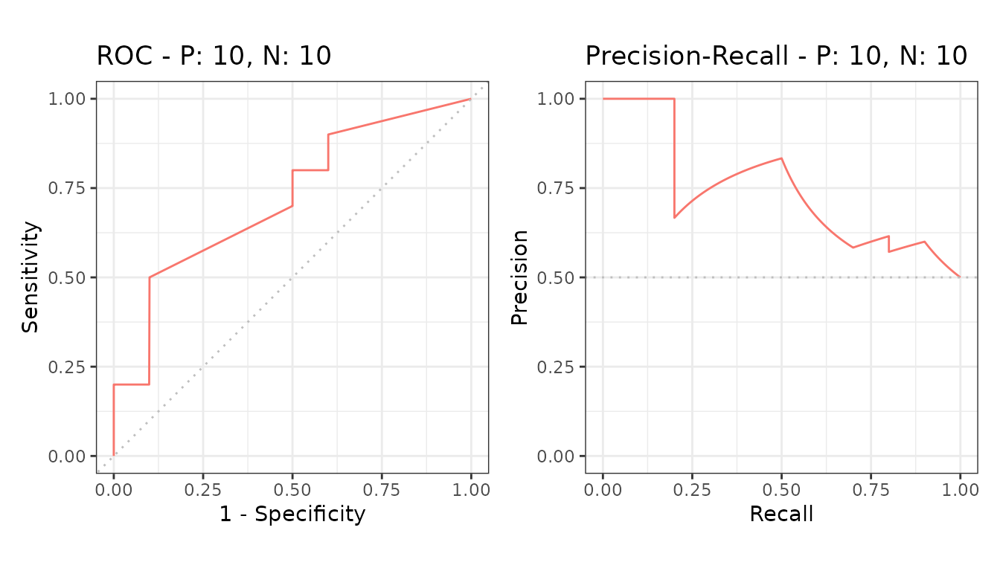

precrec calculates and plots ROC and precision-recall
curves for binary classifiers. It is built for the case where the two
curves disagree: on an imbalanced dataset a ROC curve can look excellent
while the precision-recall curve shows the classifier is not usable.
This page is the five-minute tour. Everything else lives on the package website.
The one function you need
evalmod() takes scores and labels and returns an object
the plotting and summary functions understand.
library(precrec)
# 10 positives and 10 negatives, shipped with the package
data(P10N10)
curves <- evalmod(scores = P10N10$scores, labels = P10N10$labels)scores are the classifier’s predictions - any numeric
value, higher meaning more likely positive. labels are the
observed classes. Neither has to be sorted, and the scores do not have
to be probabilities.
Look at it
plot(curves)
autoplot() draws the same thing with
ggplot2, which is the one to use if you want to restyle the
result.

Get the numbers out
auc() returns the areas under both curves.
| modnames | dsids | curvetypes | aucs |
|---|---|---|---|
| m1 | 1 | ROC | 0.7200000 |
| m1 | 1 | PRC | 0.7397716 |
as.data.frame() returns the curve points themselves,
ready for any other tool.
head(as.data.frame(curves))
#> x y modname dsid type
#> 1 0.000 0.0 m1 1 ROC
#> 2 0.000 0.1 m1 1 ROC
#> 3 0.000 0.2 m1 1 ROC
#> 4 0.001 0.2 m1 1 ROC
#> 5 0.002 0.2 m1 1 ROC
#> 6 0.003 0.2 m1 1 ROCWhere to go next
The website has three sets of short pages.
| Section | What is in it |
|---|---|
| How-to | One page per task: several models, several test sets, cross-validation, more than two classes, large datasets |
| Metrics | What each of the 29 available metrics means and when it misleads |
| Plots | Every plot the package draws, and how to change it |
Citation
Precrec: fast and accurate precision-recall and ROC curve calculations in R
Takaya Saito; Marc Rehmsmeier
Bioinformatics 2017; 33 (1): 145-147. doi: 10.1093/bioinformatics/btw570